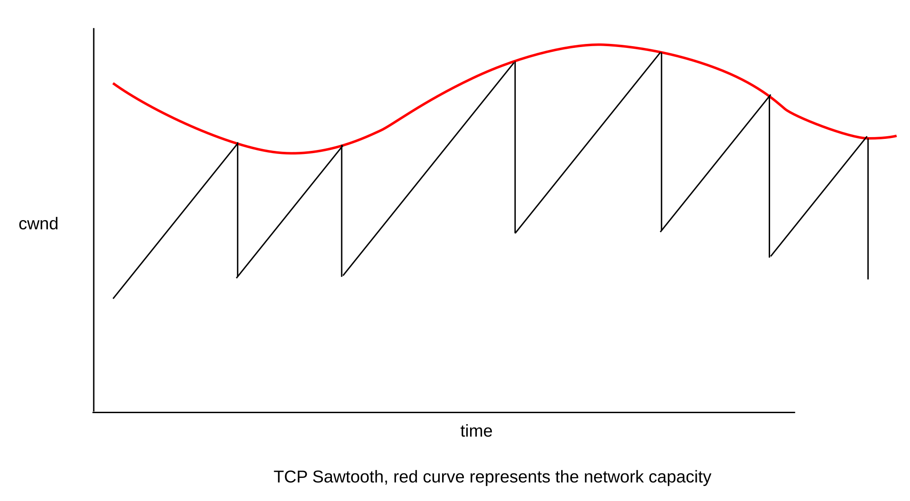
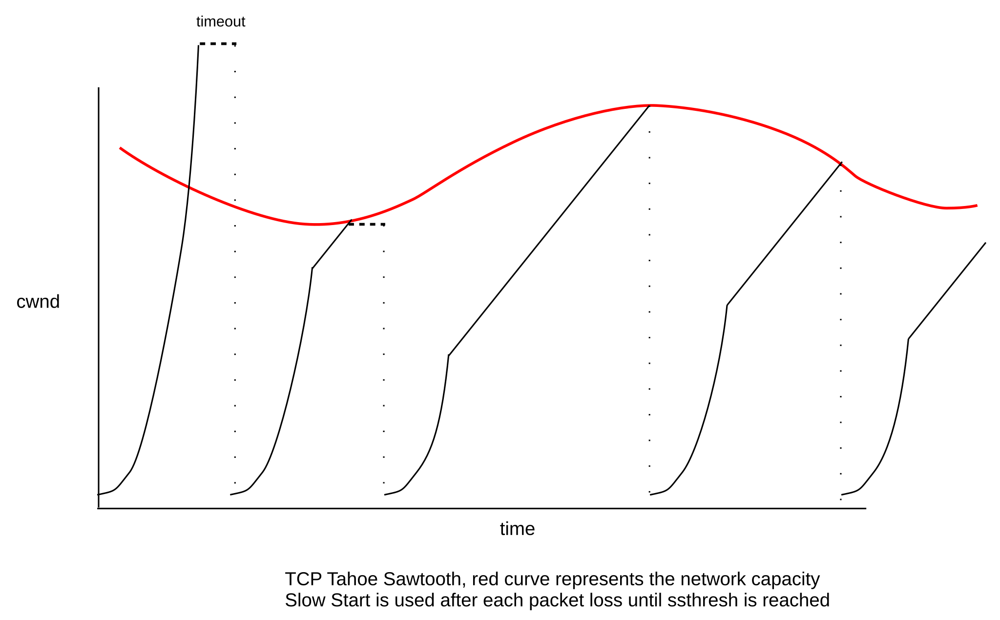

19 TCP Reno and Congestion Management¶
This chapter addresses how TCP manages congestion, both for the connection’s own benefit (to improve its throughput) and for the benefit of other connections as well (which may result in our connection reducing its own throughput). Early work on congestion culminated in 1990 with the flavor of TCP known as TCP Reno. The congestion-management mechanisms of TCP Reno remain the dominant approach on the Internet today, though alternative TCPs are an active area of research and we will consider a few of them in 22 Newer TCP Implementations.
The central TCP mechanism here is for a connection to adjust its window size. A smaller winsize means fewer packets are out in the Internet at any one time, and less traffic means less congestion. A larger winsize means better throughput, up to a point. All TCPs reduce winsize when congestion is apparent, and increase it when it is not. The trick is in figuring out when and by how much to make these winsize changes. Many of the improvements to TCP have come from mining more and more information from the stream of returning ACKs.
Recall Chiu and Jain’s definition from 1.7 Congestion that the “knee” of congestion occurs when the queue first starts to grow, and the “cliff” of congestion occurs when packets start being dropped. Congestion can be managed at either point, though dropped packets can be a significant waste of resources. Some newer TCP strategies attempt to take action at the congestion knee (starting with 22.6 TCP Vegas), but TCP Reno is a cliff-based strategy: packets must be lost before the sender reduces the window size.
In 25 Quality of Service we will consider some router-centric alternatives to TCP for Internet congestion management. However, for the most part these have not been widely adopted, and TCP is all that stands in the way of Internet congestive collapse.
The first question one might ask about TCP congestion management is just how did it get this job? A TCP sender is expected to monitor its transmission rate so as to cooperate with other senders to reduce overall congestion among the routers. While part of the goal of every TCP node is good, stable performance for its own connections, this emphasis on end-user cooperation introduces the prospect of “cheating”: a host might be tempted to maximize the throughput of its own connections at the expense of others. Putting TCP nodes in charge of congestion among the core routers is to some degree like putting the foxes in charge of the henhouse. More accurately, such an arrangement has the potential to lead to the Tragedy of the Commons. Multiple TCP senders share a common resource – the Internet backbone – and while the backbone is most efficient if every sender cooperates, each individual sender can improve its own situation by sending faster than allowed. Indeed, one of the arguments used by virtual-circuit routing adherents is that it provides support for the implementation of a wide range of congestion-management options under control of a central authority.
Nonetheless, TCP has been quite successful at distributed congestion management. In part this has been because system vendors do have an incentive to take the big-picture view, and in the past it has been quite difficult for individual users to replace their TCP stacks with rogue versions. Another factor contributing to TCP’s success here is that most bad TCP behavior requires cooperation at the server end, and most server managers have an incentive to behave cooperatively. Servers generally want to distribute bandwidth fairly among their multiple clients, and – theoretically at least – a server’s ISP could penalize misbehavior. So far, at least, the TCP approach has worked remarkably well.
19.1 Basics of TCP Congestion Management¶
TCP’s congestion management is window-based; that is, TCP adjusts its window size to adapt to congestion. The window size can be thought of as the number of packets out there in the network; more precisely, it represents the number of packets and ACKs either in transit or enqueued. An alternative approach often used for real-time systems is rate-based congestion management, which runs into an unfortunate difficulty if the sending rate momentarily happens to exceed the available rate.
In the very earliest days of TCP, the window size for a TCP connection came from the AdvertisedWindow value suggested by the receiver, essentially representing how many packet buffers it could allocate. This value is often quite large, to accommodate large bandwidth×delay products, and so is often reduced out of concern for congestion. When winsize is adjusted downwards for this reason, it is generally referred to as the Congestion Window, or cwnd (a variable name first appearing in Berkeley Unix). Strictly speaking, winsize = min(cwnd, AdvertisedWindow). In newer TCP implementations, the variable cwnd may actually be used to mean the sender’s estimate of the number of packets in flight; see the sidebar at 19.4 TCP Reno and Fast Recovery.
If TCP is sending over an idle network, the per-packet RTT will be RTTnoLoad, the travel time with no queuing delays. As we saw in 8.3.2 RTT Calculations, (RTT−RTTnoLoad) is the time each packet spends in the queue. The path bandwidth is winsize/RTT, and so the number of packets in queues is winsize × (RTT−RTTnoLoad) / RTT. Usually all the queued packets are at the router at the head of the bottleneck link. Note that the sender can calculate this number (assuming we can estimate RTTnoLoad; the most common approach is to assume that the smallest RTT measured corresponds to RTTnoLoad).
TCP’s self-clocking (ie that new transmissions are paced by returning ACKs) guarantees that, again assuming an otherwise idle network, the queue will build only at the bottleneck router. Self-clocking means that the rate of packet transmissions is equal to the available bandwidth of the bottleneck link. There are some spikes when a burst of packets is sent (eg when the sender increases its window size), but in the steady state self-clocking means that packets accumulate only at the bottleneck.
We will return to the case of the non-otherwise-idle network in the next chapter, in 20.2 Bottleneck Links with Competition.
The “optimum” window size for a TCP connection would be bandwidth × RTTnoLoad. With this window size, the sender has exactly filled the transit capacity along the path to its destination, and has used none of the queue capacity.
Actually, TCP Reno does not do this.
Instead, TCP Reno does the following:
- guesses at a reasonable initial window size, using a form of polling
- slowly increases the window size if no losses occur, on the theory that maximum available throughput may not yet have been reached
- rapidly decreases the window size otherwise, on the theory that if losses occur then drastic action is needed
In practice, this usually leaves TCP’s window size well above the theoretical “optimum”.
One interpretation of TCP’s approach is that there is a time-varying “ceiling” on the number of packets the network can accept. Each sender tries to stay near but just below this level. Occasionally a sender will overshoot and a packet will be dropped somewhere, but this just teaches the sender a little more about where the network ceiling is. More formally, this ceiling represents the largest cwnd that does not lead to packet loss, ie the cwnd that at that particular moment completely fills but does not overflow the bottleneck queue. We have reached the ceiling when the queue is full.
In Chiu and Jain’s terminology, the far side of the ceiling is the “cliff”, at which point packets are lost. TCP tries to stay above the “knee”, which is the point when the queue first begins to be persistently utilized, thus keeping the queue at least partially occupied; whenever it sends too much and falls off the “cliff”, it retreats.
The ceiling concept is often useful, but not necessarily as precise as it might sound. If we have reached the ceiling by gradually expanding the sliding-windows window size, then winsize will be as large as possible. But if the sender suddenly releases a burst of packets, the queue may fill and we will have reached a “temporary ceiling” without fully utilizing the transit capacity. Another source of ceiling ambiguity is that the bottleneck link may be shared with other connections, in which case the ceiling represents our connection’s particular share, which may fluctuate greatly with time. Finally, at the point when the ceiling is reached, the queue is full and so there are a considerable number of packets waiting in the queue; it is not possible for a sender to pull back instantaneously.
It is time to acknowledge the existence of different versions of TCP, each incorporating different congestion-management algorithms. The two we will start with are TCP Tahoe (1988) and TCP Reno (1990); the names Tahoe and Reno were originally the codenames of the Berkeley Unix distributions that included these respective TCP implementations. The ideas behind TCP Tahoe came from a 1988 paper by Jacobson and Karels [JK88]; TCP Reno then refined this a couple years later. TCP Reno is still in widespread use over twenty years later, and is still the undisputed TCP reference implementation, although some modest improvements (NewReno, SACK) have crept in.
A common theme to the development of improved implementations of TCP is for one end of the connection (usually the sender) to extract greater and greater amounts of information from the packet flow. For example, TCP Tahoe introduced the idea that duplicate ACKs likely mean a lost packet; TCP Reno introduced the idea that returning duplicate ACKs are associated with packets that have successfully been transmitted but follow a loss. TCP Vegas (22.6 TCP Vegas) introduced the fine-grained measurement of RTT, to detect when RTT > RTTnoLoad.
It is often helpful to think of a TCP sender as having breaks between successive windowfuls; that is, the sender sends cwnd packets, is briefly idle, and then sends another cwnd packets. The successive windowfuls of packets are often called flights. The existence of any separation between flights is, however, not guaranteed.
19.1.1 The Somewhat-Steady State¶
We will begin with the state in which TCP has established a reasonable guess for cwnd, comfortably below the Advertised Window Size, and which largely appears to be working. TCP then engages in some fine-tuning. This TCP “steady state” – steady here in the sense of regular oscillation – is usually referred to as the congestion avoidance phase, though all phases of the process are ultimately directed towards avoidance of congestion. The central strategy is that when a packet is lost, cwnd should decrease rapidly, but otherwise should increase “slowly”. This leads to slow oscillation of cwnd, which over time allows the average cwnd to adapt to long-term changes in the network capacity.
As TCP finishes each windowful of packets, it notes whether a loss occurred. The cwnd-adjustment rule introduced by TCP Tahoe and [JK88] is the following:
- if there were no losses in the previous windowful,
cwnd=cwnd+1 - if packets were lost,
cwnd=cwnd/2
We are informally measuring cwnd in units of full packets; strictly speaking, cwnd is measured in bytes and is incremented by the maximum TCP segment size.
This strategy here is known as Additive Increase, Multiplicative Decrease, or AIMD; cwnd = cwnd+1 is the additive increase and cwnd = cwnd/2 is the multiplicative decrease. Typically, setting cwnd=cwnd/2 is a medium-term goal; in fact, TCP Tahoe briefly sets cwnd=1 in the immediate aftermath of an actual timeout. With no losses, TCP will send successive windowfuls of, say, 20, 21, 22, 23, 24, …. This amounts to conservative “probing” of the network and, in particular, of the queue at the bottleneck router. TCP tries larger cwnd values because the absence of loss means the current cwnd is below the “network ceiling”; that is, the queue at the bottleneck router is not yet overfull.
If a loss occurs (including multiple losses in a single windowful), TCP’s response is to cut the window size in half. (As we will see, TCP Tahoe actually handles this in a somewhat roundabout way.) Informally, the idea is that the sender needs to respond aggressively to congestion. More precisely, lost packets mean the queue of the bottleneck router has filled, and the sender needs to dial back to a level that will allow the queue to clear. If we assume that the transit capacity is roughly equal to the queue capacity (say each is equal to N), then we overflow the queue and drop packets when cwnd = 2N, and so cwnd = cwnd/2 leaves us with cwnd = N, which just fills the transit capacity and leaves the queue empty.
(When the sender sets cwnd=N, the actual number of packets in transit takes at least one RTT to fall from 2N to N.)
Of course, assuming any relationship between transit capacity and queue capacity is highly speculative. On a 5,000 km fiber-optic link with a bandwidth of 10 Gbps, the round-trip transit capacity would be about 60 MB, or 60,000 1kB packets. Most routers probably do not have queues that large. Queue capacities in excess of the transit capacity are common, however. On the other hand, a competing model of a long-haul high-bandwidth TCP path is that the queue size should be a small fraction of the bandwidth×delay product. We return to this in 19.7 TCP and Bottleneck Link Utilization and 21.5.1 Bufferbloat.
Note that if TCP experiences a packet loss, and there is an actual timeout (as opposed to a packet loss detected by Fast Retransmit, 19.3 TCP Tahoe and Fast Retransmit), then the sliding-window pipe has drained. No packets are in flight. No self-clocking can govern new transmissions. Sliding windows therefore needs to restart from scratch.
The congestion-avoidance algorithm leads to the classic “TCP sawtooth” graph, where the peaks are at the points where the slowly rising cwnd crossed above the “network ceiling”. We emphasize that the TCP sawtooth is specific to TCP Reno and related TCP implementations that share Reno’s additive-increase/multiplicative-decrease mechanism.

During periods of no loss, TCP’s cwnd increases linearly; when a loss occurs, TCP sets cwnd = cwnd/2. This diagram is an idealization as when a loss occurs it takes the sender some time to discover it, perhaps as much as the TimeOut interval.
The fluctuation shown here in the red ceiling curve is somewhat arbitrary. If there are only one or two other competing senders, the ceiling variation may be quite dramatic, but with many concurrent senders the variations may be smoothed out.
For some TCP sawtooth graphs created through actual simulation, see 31.2.1 Graph of cwnd v time and 31.4.1 Some TCP Reno cwnd graphs.
19.1.1.1 A first look at fairness¶
The transit capacity of the path is more-or-less unvarying, as is the physical capacity of the queue at the bottleneck router. However, these capacities are also shared with other connections, which may come and go with time. This is why the ceiling does vary in real terms. If two other connections share a path with total capacity 60 packets, the “fairest” allocation might be for each connection to get about 20 packets as its share. If one of those other connections terminates, the two remaining ones might each rise to 30 packets. And if instead a fourth connection joins the mix, then after equilibrium is reached each connection might hope for a fair share of 15 packets.
Will this kind of “fair” allocation actually happen? Or might we end up with one connection getting 90% of the bandwidth while two others each get 5%?
Chiu and Jain [CJ89] showed that the additive-increase/multiplicative-decrease algorithm does indeed converge to roughly equal bandwidth sharing when two connections have a common bottleneck link, provided also that
- both connections have the same RTT
- during any given RTT, either both connections experience a packet loss, or neither connection does
To see this, let cwnd1 and cwnd2 be the connections’ congestion-window sizes, and consider the quantity cwnd1 − cwnd2. For any RTT in which there is no loss, cwnd1 and cwnd2 both increment by 1, and so cwnd1 − cwnd2 stays the same. If there is a loss, then both are cut in half and so cwnd1 − cwnd2 is also cut in half. Thus, over time, the original value of cwnd1 − cwnd2 is repeatedly cut in half (during each RTT in which losses occur) until it dwindles to inconsequentiality, at which point cwnd1 ≃ cwnd2.
Graphical and tabular versions of this same argument are in the next chapter, in 20.3 TCP Reno Fairness with Synchronized Losses.
The second bulleted hypothesis above we may call the synchronized-loss hypothesis. While it is very reasonable to suppose that the two connections will experience the same number of losses as a long-term average, it is a much stronger statement to suppose that all loss events are shared by both connections. This behavior may not occur in real life and has been the subject of some debate; see [GV02]. We return to this point in 31.3 Two TCP Senders Competing. Fortunately, equal-RTT fairness still holds if each connection is equally likely to experience a packet loss: both connections will have the same loss rate, and so, as we shall see in 21.2 TCP Reno loss rate versus cwnd, will have the same cwnd. However, convergence to fairness may take rather much longer. In 20.3 TCP Reno Fairness with Synchronized Losses we also look at some alternative hypotheses for the unequal-RTT case.
19.2 Slow Start¶
How do we make that initial guess as to the network capacity? What value of cwnd should we begin with? And even if we have a good target for cwnd, how do we avoid flooding the network sending an initial burst of packets?
The TCP Reno answer is known as slow start. If you are trying to guess a number in a fixed range, you are likely to use binary search. Not knowing the range for the “network ceiling”, a good strategy is to guess cwnd=1 (or cwnd=2) at first and keep doubling until you have gone too far. Then revert to the previous guess, which is known to have worked. At this point you are guaranteed to be within 50% of the true capacity.
The actual slow-start mechanism is to increment cwnd by 1 for each ACK received. This seems linear, but that is misleading: after we send a windowful of packets (cwnd many), we have received cwnd ACKs and so have incremented cwnd-many times, and so have set cwnd to (cwnd+cwnd) = 2×cwnd. In other words, cwnd=cwnd×2 after each windowful is the same as cwnd+=1 after each packet.
Assuming packets travel together in windowfuls, all this means cwnd doubles each RTT during slow start; this is possibly the only place in the computer science literature where exponential growth is described as “slow”. It is indeed slower, however, than the alternative of sending an entire windowful at once.
Here is a diagram of slow start in action. This diagram makes the implicit assumption that the no-load RTT is large enough to hold well more than the 8 packets of the maximum window size shown.
For a different case, with a much smaller RTT, see 19.2.3 Slow-Start Multiple Drop Example.
Eventually the bottleneck queue gets full, and drops a packet. Let us suppose this is after N RTTs, so cwnd=2N. Then during the previous RTT, cwnd=2N-1 worked successfully, so we go back to that previous value by setting cwnd = cwnd/2.
19.2.1 TCP Reno Per-ACK Responses¶
During slow start, incrementing cwnd by one per ACK received is equivalent to doubling cwnd after each windowful. We can find a similar equivalence for the congestion-avoidance phase, above.
During congestion avoidance, cwnd is incremented by 1 after each windowful. To formulate this as a per-ACK increase, we spread this increment of 1 over the entire windowful, which of course has size cwnd. This amounts to the following upon each ACK received:
cwnd=cwnd+ 1/cwnd
This is a slight approximation, because cwnd keeps changing, but it works well in practice. Because TCP actually measures cwnd in bytes, floating-point arithmetic is normally not required; see exercise 14.0. An exact equivalent to the per-windowful incrementing strategy is cwnd = cwnd + 1/cwnd0, where cwnd0 is the value of cwnd at the start of that particular windowful. Another, simpler, approach is to use cwnd += 1/cwnd, and to keep the fractional part recorded, but to use floor(cwnd) (the integer part of cwnd) when actually sending packets.
Most actual implementations keep track of cwnd in bytes, in which case using integer arithmetic is sufficient until cwnd becomes quite large.
If delayed ACKs are implemented (18.8 TCP Delayed ACKs), then in bulk transfers one arriving ACK actually acknowledges two packets. RFC 3465 permits a TCP receiver to increment cwnd by 2/cwnd in that situation, which is the response consistent with incrementing cwnd by 1 upon receipt of enough ACKs to acknowledge an entire windowful.
19.2.2 Threshold Slow Start¶
Sometimes TCP uses slow start even when it knows the working network capacity. After a packet loss and timeout, TCP knows that a new cwnd of cwndold/2 should work. If cwnd had been 100, TCP halves it to 50. The problem, however, is that after timeout there are no returning ACKs to self-clock the continuing transmission, and we do not want to dump 50 packets on the network all at once. So in restarting the flow TCP uses what might be called threshold slow start: it uses slow-start, but stops when cwnd reaches the target. Specifically, on packet loss we set the variable ssthresh to cwnd/2; this is our new target for cwnd. We set cwnd itself to 1, and switch to the slow-start mode (cwnd += 1 for each ACK). However, as soon as cwnd reaches ssthresh, we switch to the congestion-avoidance mode (cwnd += 1/cwnd for each ACK). Note that the transition from threshold slow start to congestion avoidance is completely natural, and easy to implement.
TCP will use threshold slow-start whenever it is restarting from a pipe drain; that is, every time slow-start is needed after its very first use. (If a connection has simply been idle, non-threshold slow start is typically used when traffic starts up again.)
Threshold slow-start can be seen as an attempt at combining rapid window expansion with self-clocking.
By comparison, we might refer to the initial, non-threshold slow start as unbounded slow start. Note that unbounded slow start serves a fundamentally different purpose – initial probing to determine the network ceiling to within 50% – than threshold slow start.
Here is the TCP sawtooth diagram above, modified to show timeouts and slow start. The first two packet losses are displayed as “coarse timeouts”; the rest are displayed as if Fast Retransmit, below, were used.

RFC 2581 allows slow start to begin with cwnd=2.
19.2.3 Slow-Start Multiple Drop Example¶
Slow start has the potential to cause multiple dropped packets at the bottleneck link; packet losses continue for quite some time because the TCP sender is slow to discover them. The network topology is as follows, where the A–R link is infinitely fast and the R–B link has a bandwidth in the R⟶B direction of 1 packet/ms.
Assume that R has a queue capacity of 100, not including the packet it is currently forwarding to B, and that ACKs travel instantly from B back to A. In this and later examples we will continue to use the Data[N]/ACK[N] terminology of 8.2 Sliding Windows, beginning with N=1; TCP numbering is not done quite this way but the distinction is inconsequential.
When A uses slow-start here, the successive windowfuls will almost immediately begin to overlap. A will send one packet at T=0; it will be delivered at T=1. The ACK will travel instantly to A, at which point A will send two packets. From this point on, ACKs will arrive regularly at A at a rate of one per second. Here is a brief chart:
| Time | A receives | A sends | R sends | R’s queue |
|---|---|---|---|---|
| 0 | Data[1] | Data[1] | ||
| 1 | ACK[1] | Data[2],Data[3] | Data[2] | Data[3] |
| 2 | ACK[2] | 4,5 | 3 | 4,5 |
| 3 | ACK[3] | 6,7 | 4 | 5..7 |
| 4 | ACK[4] | 8,9 | 5 | 6..9 |
| 5 | ACK[5] | 10,11 | 6 | 7..11 |
| .. | ||||
| N | ACK[N] | 2N,2N+1 | N+1 | N+2 .. 2N+1 |
At T=N, R’s queue contains N packets. At T=100, R’s queue is full. Data[200], sent at T=100, will be delivered and acknowledged at T=200, giving it an RTT of 100. At T=101, R receives Data[202] and Data[203] and drops the latter one. Unfortunately, A’s timeout interval must of course be greater than the RTT, and so A will not detect the loss until, at an absolute minimum, T=200. At that point, A has sent packets up through Data[401], and the 100 packets Data[203], Data[205], …, Data[401] have all been lost. In other words, at the point when A first receives the news of one lost packet, in fact at least 100 packets have already been lost.
Fortunately, unbounded slow start generally occurs only once per connection.
19.2.4 Summary of TCP so far¶
So far we have the following features:
- Unbounded slow start at the beginning
- Congestion avoidance with AIMD once some semblance of a steady state is reached
- Threshold slow start after each loss
- Each threshold slow start transitioning naturally to congestion avoidance
Here is a table expressing the slow-start and congestion-avoidance phases in terms of manipulating cwnd.
| phase | cwnd change, loss |
cwnd change, no loss |
|
| per window | per window | per ACK | |
| slow start | cwnd/2 |
cwnd *= 2 |
cwnd += 1 |
| cong avoid | cwnd/2 |
cwnd +=1 |
cwnd += 1/cwnd |
The problem TCP often faces, in both slow-start and congestion-avoidance phases, is that when a packet is lost the sender will not detect this until much later (at least until the bottleneck router’s current queue has been sent); by then, it may be too late to avoid further losses.
19.2.5 The initial value of cwnd¶
So far we have been assuming that slow start begins with cwnd equal to one packet, the value proposed in [JK88]. But 1988 was quite a while ago, and the initial cwnd has been creeping up. A decade later, RFC 2414 proposed setting the initial cwnd (used on startup and after a timeout) to between two and four packets, with a maximum size of 3×1460 (three packets if the maximum Ethernet packet size of 1500 bytes is used). For a while following, the most common value was two packets. Then RFC 6928, in 2013, proposed an “experimental” change to an initial value of up to ten packets, where each can be 1460 bytes. This ten-packet value is now in relatively common use.
This increase in the initial cwnd value has mostly to do with the steadily increasing capacity of the Internet, and the decreased likelihood that a single extra packet will make a material difference. Still, the basic behavior of slow start remains the same.
Non-Reno TCPs also implement something like slow start, though it may look slightly different. TCP BBR (22.16 TCP BBR), for example, has a STARTUP mode that serves the same function as TCP Reno slow start.
19.3 TCP Tahoe and Fast Retransmit¶
TCP Tahoe has one more important feature. Recall that TCP ACKs are cumulative; if packets 1 and 2 have been received and now Data[4] arrives, but not yet Data[3], all the receiver can (and must!) do is to send back another ACK[2]. Thus, from the sender’s perspective, if we send packets 1,2,3,4,5,6 and get back ACK[1], ACK[2], ACK[2], ACK[2], ACK[2], we can infer two things:
- Data[3] got lost, which is why we are stuck on ACK[2]
- Data 4,5 and 6 probably did make it through, and triggered the three duplicate ACK[2]s (the three ACK[2]s following the first ACK[2]).
The Fast Retransmit strategy is to resend Data[N] when we have received three dupACKs for Data[N-1]; that is, four ACK[N-1]’s in all. Because this represents a packet loss, we also set
ssthresh = cwnd/2, set cwnd=1, and begin the threshold-slow-start phase. The effect of this is typically to reduce the delay associated with the lost packet from that of a full timeout, typically 2×RTT, to just a little over a single RTT. The lost packet is now discovered before the TCP pipeline has drained. However, at the end of the next RTT, when the ACK of the retransmitted packet will return, the TCP pipeline will have drained, hence the need for slow start.
TCP Tahoe included all the features discussed so far: the cwnd+=1 and cwnd=cwnd/2 responses, slow start and Fast Retransmit.
Fast Retransmit waits for the third dupACK to allow for the possibility of moderate packet reordering. Suppose packets 1 through 6 are sent, but they arrive in the order 1,3,4,2,6,5, perhaps due to a router along the way with an architecture that is strongly parallelized. Then the ACKs that would be sent back would be as follows:
| Received | Response |
|---|---|
| Data[1] | ACK[1] |
| Data[3] | ACK[1] |
| Data[4] | ACK[1] |
| Data[2] | ACK[4] |
| Data[6] | ACK[4] |
| Data[5] | ACK[6] |
Waiting for the third dupACK is in most cases a successful compromise between responsiveness to lost packets and reasonable evidence that the data packet in question is actually lost.
However, a router that does more substantial delivery reordering would wreck havoc on connections using Fast Retransmit. In particular, consider the router R in the diagram below; when sending packets to B it might in principle wish to alternate on a packet-by-packet basis between the path via R1 and the path via R2. This would be a mistake; if the R1 and R2 paths had different propagation delays then this strategy would introduce major packet reordering. R should send all the packets belonging to any one TCP connection via a single path.
In the real world, routers generally go to considerable lengths to accommodate Fast Retransmit; in particular, use of multiple paths for a single TCP connection is almost universally frowned upon. Some actual data on packet reordering can be found in [VP97]; the author suggests that a switch to retransmission on the second dupACK would be risky.
19.4 TCP Reno and Fast Recovery¶
Fast Retransmit requires a sender to set cwnd=1 because the pipe has drained and there are no arriving ACKs to pace transmission. Fast Recovery is a technique that often allows the sender to avoid draining the pipe, and to move from cwnd to cwnd/2 in the space of a single RTT. TCP Reno is TCP Tahoe with the addition of Fast Recovery.
The idea is to use the arriving dupACKs to pace retransmission. We make the assumption that each arriving dupACK indicates that some data packet following the lost packet has been delivered successfully; it turns out not to matter which one. On discovery of the lost packet through Fast Retransmit, the goal is to set cwnd=cwnd/2; the next step is to figure out how many dupACKs we have to wait for before we can resume transmissions of new data.
Initially, at least, we assume that only one data packet is lost, though in the following section we will see that multiple losses can be handled via a slight modification of the Fast Recovery strategy.
During the recovery process, there is a problem with the direct use of sliding windows: the lost packet “pins” the lower end of the window until that packet is successfully retransmitted, so for the duration of the recovery period the window cannot slide forward. The official specification of fast recovery, originally in RFC 2001 and now in RFC 5681, describes retransmission in terms of cwnd inflation and deflation. If C is the value of cwnd at the time of the loss, then cwnd is steadily inflated to 1.5×C, allowing for the original window plus half a windowful more of new data. At the point the lost packet is successfully retransmitted, the window is “deflated” to cwnd = C/2; at this point the lower end of the window slides forward by C, and the upper end of the window does not move. This all works out, but can be a bit hard to follow.
Instead we will use the concept of Estimated FlightSize, or EFS, which is the sender’s best guess at the number of outstanding packets. Under normal circumstances, EFS is the same as cwnd. The crucial Fast Recovery observation is that EFS should be decremented by 1 for each arriving dupACK, because the arrival of each dupACK means one less packet is in transit, and so transmission of new packets can resume when EFS is reduced to half of the original value of cwnd. Our EFS approach is equivalent to the inflationary approach at least when slow start is not involved.
We first outline the general case, and then look at a specific example. Let cwnd = N, and suppose packet 1 is lost (packet numbers here may be taken as relative). Until packet 1 is retransmitted, the sender can only send up through packet N (Data[N] can be sent only after ACK[0] has arrived at the sender). The receiver will send N−1 dupACK[0]s representing packets 2 through N.
At the point of the third dupACK, when the loss of Data[1] is discovered, the sender calculates as follows:
EFS had been cwnd = N. Three dupACKs have arrived, representing three later packets no
longer in flight, so EFS is now N−3. At this point the sender realizes a packet has been lost, which makes EFS = N−4 briefly, but that packet is then immediately retransmitted, which brings EFS back to N−3.
The sender expects at this point to receive N−4 more dupACKs, followed by one new ACK for the retransmission of the packet that was lost. This last ACK will be for the entire original windowful.
The new target for cwnd is N/2 (for simplicity, we will assume N is even). So, we wait for N/2 − 3 more dupACKs to arrive, at which point EFS is N−3−(N/2−3) = N/2. After this point the sender will resume sending new packets; it will send one new packet for each of the N/2−1 subsequently arriving dupACKs (recall that there are N−1 dupACKs in all). These new transmissions will be Data[N+1] through Data[N+(N/2−1)].
After the last of the dupACKs will come the ACK corresponding to the retransmission of the lost packet; it will be ACK[N], acknowledging all of the original windowful. At this point, there are N/2 − 1 unacknowledged packets Data[N+1] through Data[N+(N/2)−1]. The sender now sends Data[N+N/2] and is thereby able to resume sliding windows with cwnd = N/2: the sender has received ACK[N] and has exactly one full windowful outstanding for the new value N/2 of cwnd. That is, we are right where we are supposed to be.
Here is a diagram illustrating Fast Recovery for cwnd=10. Data[10] is lost.
Data[9] elicits the initial ACK[9], and the nine packets Data[11] through Data[19] each elicit a dupACK[9]. We denote the dupACK[9] elicited by Data[N] by dupACK[9]/N; these are shown along the upper right. Unless SACK TCP (below) is used, the sender will have no way to determine N or to tell these dupACKs apart. When dupACK[9]/13 (the third dupACK) arrives at the sender, the sender uses Fast Recovery to infer that Data[10] was lost and retransmits it. At this point EFS = 7: the sender has sent the original batch of 10 data packets, plus Data[19], and received one ACK and three dupACKs, for a total of 10+1-1-3 = 7. The sender has also inferred that Data[10] is lost (EFS −= 1) but then retransmitted it (EFS += 1). Six more dupACK[9]’s are on the way.
EFS is decremented for each subsequent dupACK arrival; after we get two more dupACK[9]’s, EFS is 5. The next dupACK[9] (dupACK[9]/16) reduces EFS to 4 and so allows us transmit Data[20] (which promptly bumps EFS back up to 5). We have
| receive | send |
|---|---|
| dupACK[9]/16 | Data[20] |
| dupACK[9]/17 | Data[21] |
| dupACK[9]/18 | Data[22] |
| dupACK[9]/19 | Data[23] |
We emphasize again that the TCP sender does not see the numbers 16 through 19 in the receive column above; it determines when to begin transmission by counting dupACK[9] arrivals.
The next thing to arrive at the sender side is the ACK[19] elicited by the retransmitted Data[10]; at the point Data[10] arrives at the receiver, Data[11] through Data[19] have already arrived and so the cumulative-ACK response is ACK[19]. The sender responds to ACK[19] with Data[24], and the transition to cwnd=5 is now complete.
During sliding windows without losses, a sender will send cwnd packets per RTT. If a “coarse” timeout occurs, typically it is not discovered until after at least one complete RTT of link idleness; there are additional underutilized RTTs during the slow-start phase. It is worth examining the Fast Recovery sequence shown in the illustration from the perspective of underutilized bandwidth. The diagram shows three round-trip times, as seen from the sender side. During the first RTT, the ten packets Data[9]-Data[18] are sent. The second RTT begins with the sending of Data[19] and continues through sending Data[22], along with the retransmitted Data[10]. The third RTT begins with sending Data[23], and includes through Data[27]. In terms of recovery efficiency, the RTTs send 9, 5 and 5 packets respectively (we have counted Data[10] twice); this is remarkably close to the ideal of reducing cwnd to 5 instantaneously.
Using the fast-recovery description in terms of inflation from RFC 5681, inflation would begin at the point the sender resumed transmitting new packets, at which point cwnd would be incremented for each dupACK. In the diagram above, at the instant labeled “send Data[24]” on the sender side, cwnd would momentarily become 15, representing the window Data[10]..Data[24]. As soon as the sender realized that the lost packet Data[10] had been acknowledged, via ACK[19], cwnd would immediately deflate to 5, representing the window Data[20]..Data[24]. For a diagram illustrating cwnd inflation and deflation, see 32.2.1 Running the Script.
There is one more addition to Fast Recovery, described in RFC 3042, and known as Limited Transmit. As described above, transmission of new data begins with the third dupACK, which is the point at which Fast Recovery is initiated. Limited Transmit means that one new data packet is also transmitted for each of the first two dupACKs, on a “just in case” basis. These two transmissions are “borrowed” against future forward motion of the send window; the value of cwnd is not changed and the first “skipped” packet is not retransmitted. If there was no packet loss, and the dupACKs simply resulted from packet reordering, no harm is done. Otherwise, Fast Retransmit gets a slightly earlier start. For small window sizes this can make a significant difference.
19.5 TCP NewReno¶
TCP NewReno, described in [JH96] and RFC 2582 (currently RFC 6582), is a modest tweak to Fast Recovery which greatly improves handling of the case when two or more packets are lost in a windowful. It is generally considered to be a part of contemporary TCP Reno. We again describe it in terms of Estimated FlightSize rather than in terms of cwnd inflation and deflation.
If two data packets are lost and the first is retransmitted, the receiver will acknowledge data up to just before the second packet, and then continue sending dupACKs of this until the second lost packet is also retransmitted. These ACKs of data up to just before the second packet are sometimes called partial ACKs, because retransmission of the first lost packet did not result in an ACK of all the outstanding data. The NewReno mechanism uses these partial ACKs as evidence to retransmit later lost packets, and also to keep pacing the Fast Recovery process.
In the diagram below, packets 1 and 4 are lost in a window 0..11 of size 12. Initially the sender will get dupACK[0]’s; the first 11 ACKs (dashed lines from right to left) are ACK[0] and 10 dupACK[0]’s. When packet 1 is successfully retransmitted on receipt of the third dupACK[0], the receiver’s response will be ACK[3] (the heavy dashed line). This is the first partial ACK (a full ACK would have been ACK[12]). On receipt of any partial ACK during the Fast Recovery process, TCP NewReno assumes that the immediately following data packet was lost and retransmits it immediately; the sender does not wait for three dupACKs because if the following data packet had not been lost, no instances of the partial ACK would ever have been generated, even if packet reordering had occurred.
The TCP NewReno sender response here is, in effect, to treat each partial ACK as a dupACK[0], except that the sender also retransmits the data packet that – based upon receipt of the partial ACK – it is able to infer is lost. NewReno continues pacing Fast Recovery by whatever ACKs arrive, whether they are the original dupACKs or later partial ACKs or dupACKs.
When the receiver’s first ACK[3] arrives at the sender, NewReno infers that Data[4] was lost and resends it; this is the second heavy data line. No dupACK[3]’s need arrive; as mentioned above, the sender can infer from the single ACK[3] that Data[4] is lost. The sender also responds as if another dupACK[0] had arrived, and sends Data[17].
The arrival of ACK[3] signals a reduction in the EFS by 2: one for the inference that Data[4] was lost, and one as if another dupACK[0] had arrived; the two transmissions in response (of Data[4] and Data[17]) bring EFS back to where it was. At the point when Data[16] is sent the actual (not estimated) flightsize is 5, not 6, because there is one less dupACK[0] due to the loss of Data[4]. However, once NewReno resends Data[4] and then sends Data[17], the actual flightsize is back up to 6.
There are four more dupACK[3]’s that arrive. NewReno keeps sending new data on receipt of each of these; these are Data[18] through Data[21].
The receiver’s response to the retransmitted Data[4] is to send ACK[16]; this is the cumulative of all the data received up to that moment. At the point this ACK arrives back at the sender, it had just sent Data[21] in response to the fourth dupACK[3]; its response to ACK[16] is to send the next data packet, Data[22]. The sender is now back to normal sliding windows, with a cwnd of 6. Similarly, the Data[17] immediately following the retransmitted Data[4] elicits an ACK[17] (this is the first Data[N] to elicit an exactly matching ACK[N] since the losses began), and the corresponding response to the ACK[17] is to continue with Data[23].
As with the previous Fast Recovery example, we consider the number of packets sent per RTT; the diagram shows four RTTs as seen from the sender side.
| RTT | First packet | Packets sent | count |
|---|---|---|---|
| first | Data[0] | Data[0]-Data[11] | 12 |
| second | Data[12] | Data[12]-Data[15], Data[1] | 5 |
| third | Data[16] | Data[16]-Data[20], Data[4] | 6 |
| fourth | Data[21] | Data[21]-Data[26] | 6 |
Again, after the loss is detected we segue to the new cwnd of 6 with only a single missed packet (in the second RTT). NewReno is, however, only able to send one retransmitted packet per RTT.
Note that TCP Newreno, like TCPs Tahoe and Reno, is a sender-side innovation; the receiver does not have to do anything special. The next TCP flavor, SACK TCP, requires receiver-side modification.
19.6 Selective Acknowledgments (SACK)¶
A traditional TCP ACK is a cumulative acknowledgment of all data received up to that point. If Data[1002] is received but not Data[1001], then all the receiver can send is a duplicate ACK[1000]. This does indicate that something following Data[1001] made it through, but nothing more.
To provide greater specificity, TCP now provides a Selective ACK (SACK) option, implemented at the receiver. If this is available, the sender does not have to guess from dupACKs what has gotten through. The receiver can send an ACK that says:
- All packets up through 1000 have been received (the cumulative ACK)
- All packets up through 1050 have been received except for 1001, 1022, and 1035.
The second line is the SACK part. Almost all TCP implementations now support this.
Specifically, SACKs include the following information; the additional data beyond the cumulative ACK is included in a TCP Option field.
- The latest cumulative ACK
- The three most recent blocks of consecutive packets received
Thus, if we have lost 1001, 1022, 1035, and now 1051, and the highest received is 1060, the SACK might say:
- All packets up through 1000 have been received
- 1060-1052 have been received
- 1050-1036 have been received
- 1034-1023 have been received
From this the sender know 1001s and 1022 were not received, but nothing about the packets in between. However, if the sender has been paying close attention to the previous SACKs received, it likely already knows that all packets 1002 through 1021 have been received.
The term SACK TCP is typically used to mean that the receiving side supports selective ACKs, and the sending side is a straightforward modification of TCP Reno to take advantage of them.
In practice, selective ACKs provide at best a modest performance improvement in many situations; TCP NewReno does rather well, in moderate-loss environments. The paper [FF96] compares Tahoe, Reno, NewReno and SACK TCP, in situations involving from one to four packet losses in a single RTT. While Classic Reno performed poorly with two packet losses in a single RTT and extremely poorly with three losses, the three-loss NewReno and SACK TCP scenarios played out remarkably similarly. Only when connections experienced four losses in a single RTT did SACK TCP’s performance start to pull slightly ahead of that of NewReno.
19.7 TCP and Bottleneck Link Utilization¶
Consider a TCP Reno sender with no competing traffic. As cwnd saws up and down, what happens to throughput? Do those halvings of cwnd result in at least a dip in throughput? The answer depends to some extent on the size of the queue ahead of the bottleneck link, relative to the transit capacity of the path. As was discussed in 8.3.2 RTT Calculations, when cwnd is less than the transit capacity, the link is less than 100% utilized and the queue is empty. When cwnd is more than the transit capacity, the link is saturated (100% utilized) and the queue has about (cwnd − transit_capacity) packets in it.
The diagram below shows two TCP Reno teeth; in the first, the queue capacity exceeds the path transit capacity and in the second the queue capacity is a much smaller fraction of the total.
In the first diagram, the bottleneck link is always 100% utilized, even at the left edge of the teeth. In the second the interval between loss events (the left and right margins of the tooth) is divided into a link-unsaturated phase and a queue-filling phase. In the unsaturated phase, the bottleneck link utilization is less than 100% and the queue is empty; in the later phase, the link is saturated and the queue begins to fill.
Consider again the idealized network below, with an R–B bandwidth of 1 packet/ms.
We first consider the queue ≥ transit case. Assume that the total RTTnoLoad delay is 100 ms, mostly due to propagation delay; this makes the bandwidth×delay product 100 packets. The question for consideration is to what extent TCP Reno, once slow-start is over, sometimes leaves the R–B link idle.
The R–B link will be saturated at all times provided A always keeps 100 packets in transit, that is, we always have cwnd ≥ 100 (8.3.2 RTT Calculations). If cwndmin = 100, then cwndmax = 2×cwndmin = 200. For this to be the maximum, the queue capacity must be at least 99, so that the path can accommodate 199 packets without loss: 100 packets in transit plus 99 packets in the queue. In general, TCP Reno never leaves the bottleneck link idle as long as the queue capacity in front of that link is at least as large as the path round-trip transit capacity.
Now suppose instead that the queue size is 49, or about 50% of the transit capacity. Packet loss will occur when cwnd reaches 150, and so cwndmin = 75. Qualitatively this case is represented by the second diagram above, though the queue-to-network_ceiling proportion illustrated there is more like 1:8 than 1:3. There are now periods when the R–B link is idle. During RTT intervals when cwnd=75, throughput will be 75% of the maximum and the R–B link will be idle 25% of the time.
However, cwnd will be 75 just for the first RTT following the loss. After 25 RTTs, cwnd will be back up to 100, and the link will be saturated. So we have 25 RTTs with an average cwnd of 87.5 (=&75+100)/2), meaning the link is 87.5% saturated, followed by 50 RTTs where the link is 100% saturated. The long-term average here is 95.8% utilization of the bottleneck link. This is not bad at all, given that using 10% of the link bandwidth on packet headers is almost universally considered reasonable. Furthermore, at the point when cwnd drops after a loss to cwndmin=75, the queue must have been full. It may take one or two RTTs for the queue to drain; during this time, link utilization will be even higher.
If most or all of the time the bottleneck link is saturated, as in the first diagram, it may help to consider the average queue size. Let the queue capacity be Cqueue and the transit capacity be Ctransit, with Cqueue > Ctransit. Then cwnd will vary from a maximum of Cqueue+Ctransit to a minimum of what works out to be (Cqueue-Ctransit)/2 + Ctransit. We would expect an average queue size about halfway between these, less the Ctransit term: 3/4×Cqueue - 1/4×Ctransit. If Cqueue=Ctransit, the expected average queue size should be about Cqueue/2.
See exercises 12.0 and 12.5.
19.7.1 TCP Queue Sizes¶
From the perspective of link utilization, the previous section suggests that router queues be larger rather than smaller. A queue capacity at least as large as transit capacity seems like an excellent choice. To configure a router this way, we first make an educated guess at the average RTT, and then multiply this by the output bandwidth to get the desired queue capacity. For an average RTT of 50 ms, a bandwidth of 1 Gbps leads to a queue capacity of about 6 MB, or 4000 packets of 1500 bytes each. If the numbers rise to 100 ms and 10 Gbps, queue capacity needs to be 125 MB.
Unfortunately, while large queues are helpful when the traffic consists exclusively of bulk TCP transfers, they introduce proportionately large queuing delays that can wreak havoc on real-time traffic. A bottleneck router with a queue size matching a flow’s bandwidth×delay product will double the RTT for that flow, at points when the queue is full. Worse, if the goal is 100% TCP link utilization always, then the router queue must be sized for the highest-bandwidth flow with the longest RTT; shorter TCP connections will encounter a queue much larger than necessary. This problem of large queue capacity leading to excessive delay is known as bufferbloat; we will return to it at 21.5.1 Bufferbloat.
Because of the delay problems brought on by large queues, TCP connections must sometimes pass through bottleneck routers with small queues. In this case a tooth of a TCP Reno connection is divided into a large link-unsaturated phase and a small queue-filling phase.
The need for large buffers, if near-100% queue utilization is the goal, is to a large degree specific to the TCP Reno sawtooth. Some other TCP implementations (in particular TCP Vegas, 22.6 TCP Vegas), do not overfill the queue. However, TCP Vegas does not compete well with TCP Reno, at least with traditional FIFO queuing (20.1 A First Look At Queuing) (but see 23.6.1 Fair Queuing and Bufferbloat).
The worst case for TCP link utilization is if the queue size is close to zero. Using again a bandwidth×delay product 100 of packets, a zero-sized queue will mean that cwndmax will be 100 (or 101), and so cwndmin will be 50. Link utilization therefore ranges, over the lifetime of the tooth, from a low of 50/100 = 50% to a high of 100%; the average utilization is 75%. While this is not ideal, and while some non-Reno TCP variants have attempted to improve this figure, 75% link utilization is not all that bad, and can be compared with the 10% of the bandwidth consumed as packet headers (though that figure assumes 512 bytes of data per packet, which is low). (A literally zero-sized queue will not work at all well; one reason – though not the only one – is that TCP Reno sends a two-packet burst whenever cwnd is incremented.)
Traffic mix has a major influence on the appropriate queue size. For example, the analysis of the previous section assumed a single long-term TCP connection. The link-utilization situation improves with increasing numbers of TCP connections, at least if the losses are unsynchronized, because the halving of one connection’s cwnd has a proportionately smaller impact on the total queue use. In [AKM04] it is shown that for a router with N TCP connections with unsynchronized losses, a queue size of (RTTaverage × bandwidth)/√N is sufficient to keep the link almost always saturated. Larger values of N here are typically associated with “core” (backbone) routers. The paper [EGMR05] proposes even smaller buffer capacities, on the order of the logarithm of the maximum window size. The argument makes two important assumptions, however: first, that we are willing to tolerate a link utilization somewhat less than 100% (though greater than 75%), and second, perhaps more importantly, that TCP is modified so as to spread out any packet bursts – even bursts of size two – over small intervals of time.
There are other problems created by too-small queues, even if we are willing to accept 75% link utilization. Internet traffic, not unlike city-bus traffic, tends to “bunch up”; queues serve as a way to keep these packet bunches from leading to unnecessary losses. For one example of unexpected traffic bunching, see 31.4.1.3 Transient queue peaks. Increased traffic randomization helps reduce the need for very large queues, but may increase the bunching effect. Internet “core” routers see more highly randomized traffic than end-user or “edge” routers; queues in the latter are often the most difficult to configure.
We will return to the issue of link utilization in 31.2.6 Single-sender Throughput Experiments and (for two senders) 31.3.10.2 Higher bandwidth and link utilization, using the ns simulator to get experimental data. See also exercise 12.0.
Finally, the queue capacity does not necessarily have to remain static. We will return to this point in 21.5 Active Queue Management. Furthermore, many queue-size problems ultimately spring from the fact that all traffic is being dumped into a single FIFO queue; we will look at alternative queuing strategies in 23 Queuing and Scheduling. For a particular example related to bufferbloat, see 23.6.1 Fair Queuing and Bufferbloat.
19.8 Single Packet Losses¶
Again assuming no competition on the bottleneck link, the TCP Reno additive-increase policy has a simple consequence: at the end of each tooth, only a single packet will be lost.
To see this, let A be the sender, R be the bottleneck router, and B be the receiver:
Let T be the bandwidth delay at R, so that packets leaving R are spaced at least time T apart. A will therefore transmit packets T time units apart, except for those times when cwnd has just been incremented and A sends a pair of packets back-to-back. Let us call the second packet of such a back-to-back pair the “extra” packet. To simplify the argument slightly, we will assume that the two packets of a pair arrive at R essentially simultaneously.
Only an extra packet can result in an increase in queue utilization; every other packet arrives after an interval T from the previous packet, giving R enough time to remove a packet from its queue.
A consequence of this is that cwnd will reach the sum of the transit capacity and the queue capacity without R dropping a packet. (This is not necessarily the case if a cwnd this large were sent as a single burst.)
Let C be this combined capacity, and assume cwnd has reached C. When A executes its next cwnd += 1 additive increase, it will as usual send a pair of back-to-back packets. The second of this pair – the extra – is doomed; it will be dropped when it reaches the bottleneck router.
At this point there are C = cwnd − 1 packets outstanding, all spaced at time intervals of T. Sliding windows will continue normally until the ACK of the packet just before the lost packet arrives back at A. After this point, A will receive only dupACKs. A has received C = cwnd−1 ACKs since the last increment to cwnd, but must receive C+1 = cwnd ACKs in order to increment cwnd again. This will not happen, as no more new ACKs will arrive until the lost packet is transmitted.
Following this, cwnd is reduced and the next sawtooth begins; the only packet that is lost is the “extra” packet of the previous flight.
See 31.2.3 Single Losses for experimental confirmation, and exercise 15.0.
19.9 TCP Assumptions and Scalability¶
In the TCP design portrayed above, several embedded assumptions have been made. Perhaps the most important is that every loss is treated as evidence of congestion. As we shall see in the next chapter, this fails for high-bandwidth TCP (when rare random losses become significant); it also fails for TCP over wireless (either Wi-Fi or other), where lost packets are much more common than over Ethernet. See 21.6 The High-Bandwidth TCP Problem and 21.7 The Lossy-Link TCP Problem.
The TCP cwnd-increment strategy – to increment cwnd by 1 for each RTT – has some assumptions of scale. This mechanism works well for cross-continent RTT’s on the order of 100 ms, and for cwnd in the low hundreds. But if cwnd = 2000, then it takes 100 RTTs – perhaps 20 seconds – for cwnd to grow 10%; linear increase becomes proportionally quite slow. Also, if the RTT is very long, the cwnd increase is slow. The absolute set-by-the-speed-of-light minimum RTT for geosynchronous-satellite Internet is 480 ms, and typical satellite-Internet RTTs are close to 1000 ms. Such long RTTs also lead to slow cwnd growth; furthermore, as we shall see below, such long RTTs mean that these TCP connections compete poorly with other connections. See 21.8 The Satellite-Link TCP Problem.
Another implicit assumption is that if we have a lot of data to transfer, we will send all of it in one single connection rather than divide it among multiple connections. The web http protocol violates this routinely, though. With multiple short connections, cwnd may never properly converge to the steady state for any of them; TCP Reno does not support carrying over what has been learned about cwnd from one connection to the next. A related issue occurs when a connection alternates between relatively idle periods and full-on data transfer; most TCPs set cwnd=1 and return to slow start when sending resumes after an idle period.
Finally, TCP’s Fast Retransmit assumes that routers do not significantly reorder packets.
19.10 TCP Parameters¶
In TCP Reno’s Additive Increase, Multiplicative Decrease strategy, the increase increment is 1.0 and the decrease factor is 1/2. It is natural to ask if these values have some especial significance, or what are the consequences if they are changed.
Neither of these values plays much of a role in determining the average value of cwnd, at least in the short term; this is largely dictated by the path capacity, including the queue size of the bottleneck router. It seems clear that the exact value of the increase increment has no bearing on congestion; the per-RTT increase is too small to have a major effect here. The decrease factor of 1/2 may play a role in responding promptly to incipient congestion, in that it reduces cwnd sharply at the first sign of lost packets. However, as we shall see in 22.6 TCP Vegas, TCP Vegas in its “normal” mode manages quite successfully with an Additive Decrease strategy, decrementing cwnd by 1 at the point it detects approaching congestion (to be sure, it detects this well before packet loss), and, by some measures, responds better to congestion than TCP Reno. In other words, not only is the exact value of the AIMD decrease factor not critical for congestion management, but multiplicative decrease itself is not mandatory.
There are two informal justifications in [JK88] for a decrease factor of 1/2. The first is in slow start: if at the Nth RTT it is found that cwnd = 2N is too big, the sender falls back to cwnd/2 = 2N-1, which is known to have worked without losses the previous RTT. However, a change here in the decrease policy might best be addressed with a concomitant change to slow start; alternatively, the reduction factor of 1/2 might be left still to apply to “unbounded” slow start, while a new factor of 𝛽 might apply to threshold slow start.
The second justification for the reduction factor of 1/2 applies directly to the congestion avoidance phase; written in 1988, it is quite remarkable to the modern reader:
If the connection is steady-state running and a packet is dropped, it’s probably because a new connection started up and took some of your bandwidth…. [I]t’s probable that there are now exactly two conversations sharing the bandwidth. I.e., you should reduce your window by half because the bandwidth available to you has been reduced by half. [JK88], §D
Today, busy routers may have thousands of simultaneous connections. To be sure, Jacobson and Karels go on to state, “if there are more than two connections sharing the bandwidth, halving your window is conservative – and being conservative at high traffic intensities is probably wise”. This advice remains apt today.
But while they do not play a large role in setting cwnd or in avoiding “congestive collapse”, it turns out that these increase-increment and decrease-factor values of 1 and 1/2 respectively play a great role in fairness: making sure competing connections get the bandwidth allocation they “should” get. We will return to this in 20.3 TCP Reno Fairness with Synchronized Losses, and also 21.4 AIMD Revisited.
19.11 Epilog¶
TCP Reno’s core congestion algorithm is based on algorithms in Jacobson and Karel’s 1988 paper [JK88], now twenty-five years old, although NewReno and SACK have been almost universally added to the standard “Reno” implementation.
There are also broad changes in TCP usage patterns. Twenty years ago, the vast majority of all TCP traffic represented downloads from “major” servers. Today, over half of all Internet TCP traffic is peer-to-peer rather than server-to-client. The rise in online video streaming creates new demands for excellent TCP real-time performance.
In the next chapter we will examine the dynamic behavior of TCP Reno, focusing in particular on fairness between competing connections, and on other problems faced by TCP Reno senders. Then, in 22 Newer TCP Implementations, we will survey some attempts to address these problems.
19.12 Exercises¶
Exercises may be given fractional (floating point) numbers, to allow for interpolation of new exercises. Exercises marked with a ♢ have solutions or hints at 34.14 Solutions for TCP Reno and Congestion Management.
1.0. Consider the following network, with each link other than the first having a bandwidth delay of 1 packet/second. Assume ACKs travel instantly from B to R (and thus to A). Assume there are no propagation delays, so the RTTnoLoad is 4; the bandwidth×RTT product is then 4 packets. If A uses sliding windows with a window size of 6, the queue at R1 will eventually have size 2.

Suppose A uses threshold slow start (19.2.2 Threshold Slow Start) with ssthresh = 6, and with cwnd initially 1. Complete the table below until two rows after cwnd = 6; for these final two rows, cwnd has reached ssthresh and so A will send only one new packet for each ACK received. Assume the queue at R1 is large enough that no packets are dropped. How big will the queue at R1 grow?
| T | A sends | R1 queues | R1 sends | B receives/ACKs | cwnd |
|---|---|---|---|---|---|
| 0 | 1 | 1 | 1 | ||
| 1 | |||||
| 2 | |||||
| 3 | |||||
| 4 | 2,3 | 3 | 2 | 1 | 2 |
| 5 | 3 | 2 | |||
| 6 | |||||
| 7 | |||||
| 8 | 4,5 | 5 | 4 | 2 | 3 |
Note that if, instead of using slow start, A simply sends the initial windowful of 6 packets all at once, then the queue at R1 will initially hold 6-1 = 5 packets.
2.0. Consider the following network from 19.2.3 Slow-Start Multiple Drop Example, with links labeled with bandwidths in packets/ms. Assume ACKs travel instantly from B to R (and thus to A).
A begins sending to B using unbounded slow start, beginning with Data[1] at T=0. Initially, cwnd = 1. Write out a table of packet transmissions and deliveries assuming R’s maximum queue size is 4 (not counting the packet currently being forwarded). Stop with the arrival at A of the first dupACK triggered by the arrival at B of the packet that followed the first packet that was dropped by R. No retransmissions will occur by then.
| T | A sends | R queues | R drops | R sends | B receives/ACKs |
|---|---|---|---|---|---|
| 0 | Data[1] | Data[1] |
3.0. Consider the network from exercise 2.0 above. A again begins sending to B using unbounded slow start, but this time R’s queue size is 2, not counting the packet currently being forwarded. Make a table showing all packet transmissions by A, all packet drops by R, and other columns as are useful. Assume no retransmission mechanism is used at all (no timeouts, no fast retransmit), and that A sends new data only when it receives new ACKs (dupACKs, in other words, do not trigger new data transmissions). With these assumptions, new data transmissions will eventually cease; continue the table until all transmitted data packets are received by B.
4.0. Suppose a connection starts with cwnd=1 and increments cwnd by 1 each RTT with no loss, and sets cwnd to cwnd/2, rounding down, on each RTT with at least one loss. Lost packets are not retransmitted, and propagation delays dominate so each windowful is sent more or less together. Packets 5, 13, 14, 23 and 30 are lost. What is the window size each RTT, up until the first 40 packets are sent? What packets are sent each RTT? Hint: in the first RTT, Data[1] is sent. There is no loss, so in the second RTT cwnd = 2 and Data[2] and Data[3] are sent.
5.0. Suppose TCP Reno is used to transfer a large file over a path with bandwidth high enough that, during slow start, cwnd can be treated as doubling each RTT as in 19.2 Slow Start. Assume the receiver places no limits on window size.
6.0. (a) Repeat the diagram in 19.4 TCP Reno and Fast Recovery, done there with cwnd=10, for a window size of 8. Assume as before that the lost packet is Data[10]. There will be seven dupACK[9]’s, which it may be convenient to tag as dupACK[9]/11 through dupACK[9]/17. Be sure to indicate clearly when sending resumes.
7.0. Suppose the window size is 100, and Data[1001] is lost. There will be 99 dupACK[1000]’s sent, which we may denote as dupACK[1000]/1002 through dupACK[1000]/1100. TCP Reno is used.
Hint: express EFS in terms of dupACK[1000]/N, for N≥1004. The third dupACK is dupACK[1000]/1004; what is EFS at that point after retransmission of Data[1001]?
8.0. Suppose the window size is 40, and Data[1001] is lost. Packet 1000 will be ACKed normally. Packets 1001-1040 will be sent, and 1002-1040 will each trigger a duplicate ACK[1000].
When the retransmitted Data[1001] arrives at the receiver, ACK[1040] will be sent back.
9.0. Recall (19.2 Slow Start) that during slow start cwnd is incremented by 1 for each arriving ACK, resulting in the transmission of two new data packets. Suppose slow-start is modified so that, on each ACK, three new packets are sent rather than two; cwnd will now triple after each RTT, taking values 1, 3, 9, 27, ….
cwnd now be incremented?cwnd is reached where a packet loss occurs. What window size can the sender be reasonably sure does work, based on earlier experience?10.0. Suppose in the example of 19.5 TCP NewReno, Data[4] had not been lost.
cwnd = 6?11.0. Suppose in the example of 19.5 TCP NewReno, Data[1] and Data[2] had been lost, but not Data[4].
12.0. Suppose two TCP connections have the same RTT and share a bottleneck link, on which there is no other traffic. The size of the bottleneck queue is negligible when compared to the bandwidth × RTTnoLoad product. Loss events occur at regular intervals, and are completely synchronized. Show that the two connections together will use 75% of the total bottleneck-link capacity, as in 19.7 TCP and Bottleneck Link Utilization (there done for a single connection).
See also Exercise 16.0 of chapter 21 Further Dynamics of TCP.
13.0. In 19.7 TCP and Bottleneck Link Utilization we showed that, if the bottleneck router queue capacity was 50% of a TCP Reno connection’s transit capacity, and there was no other traffic, then the bottleneck-link utilization would be 95.8%.
cwndmax to 4/3 the transit capacity (the value of cwnd just before the packet loss; the exact value of cwndmax is higher by 1).14.0. In 19.2.1 TCP Reno Per-ACK Responses we stated that the per-ACK response of a TCP sender was to increment cwnd as follows:
cwnd=cwnd+ 1/cwnd
SMSS denote the sender’s maximum segment size, and let bwnd = SMSS×cwnd denote the congestion window as measured in bytes. Hint: solve this last equation for cwnd and plug the result in above.cwnd = cwnd + 1/cwnd if delayed ACKs are used (18.8 TCP Delayed ACKs) and we still want cwnd to be incremented by 1 for each windowful? Assume we are back to measuring cwnd in packets.15.0. In 19.8 Single Packet Losses we simplified the argument slightly by assuming that when A sent a pair of packets, they arrived at R “essentially simultaneously”.
Give a scenario in which it is not the “extra” packet (the second of the pair) that is lost, but the packet that follows it. Hint: see 31.3.4.1 Single-sender phase effects.